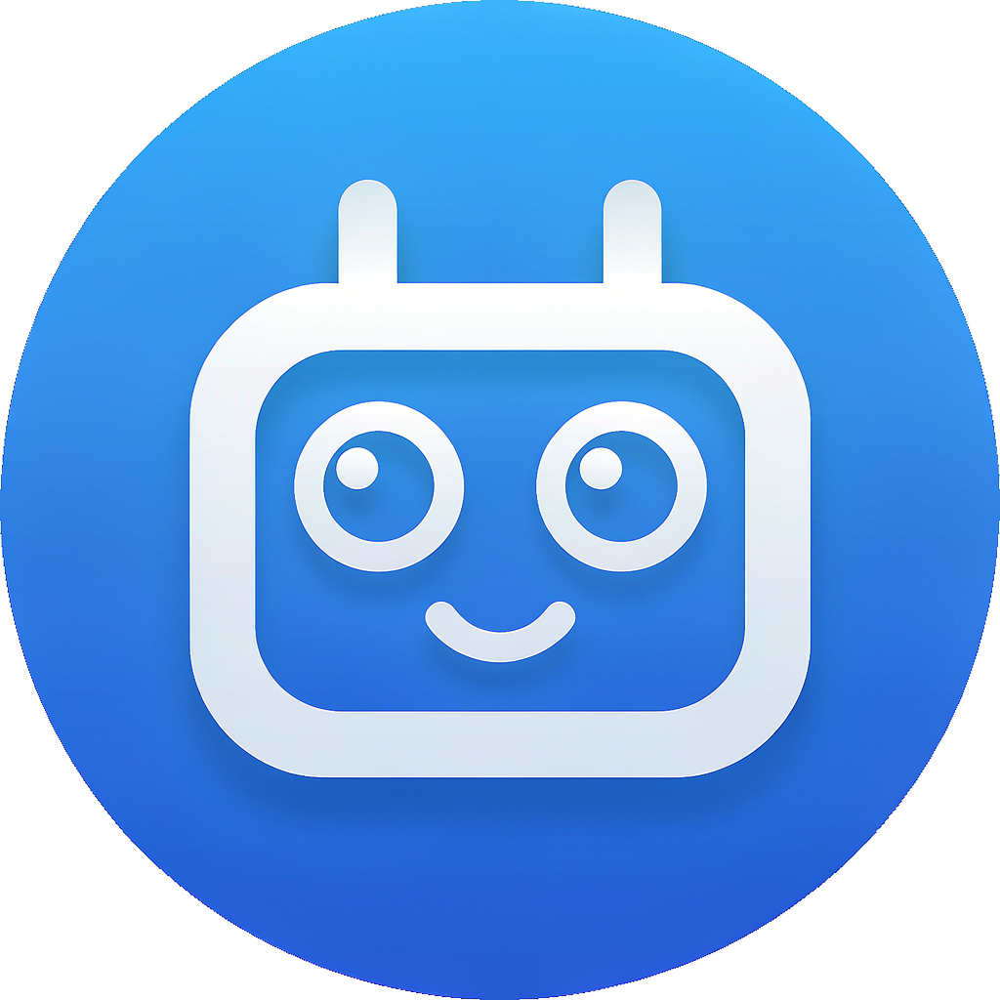
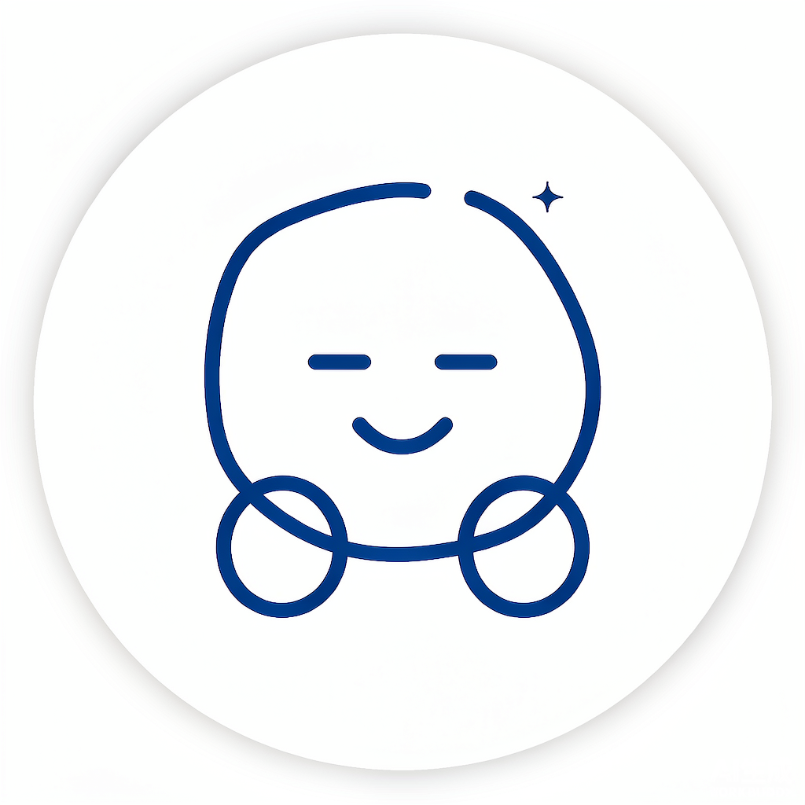
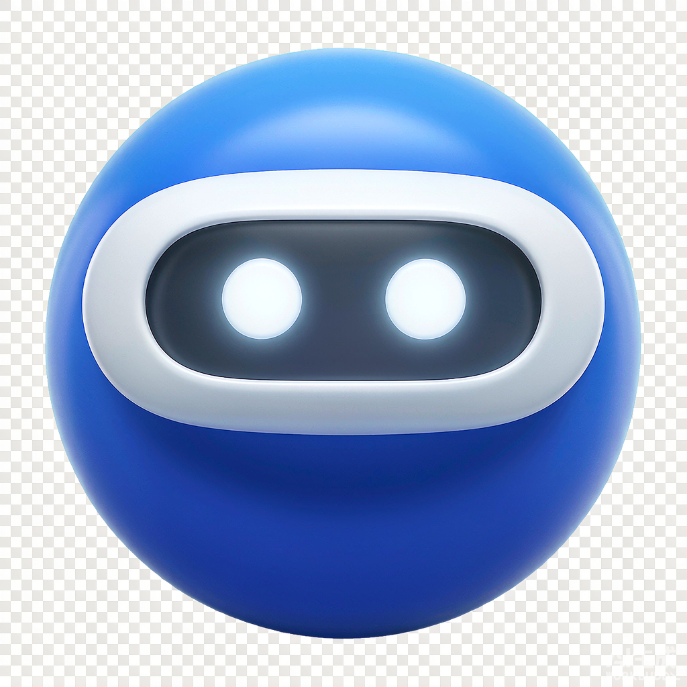
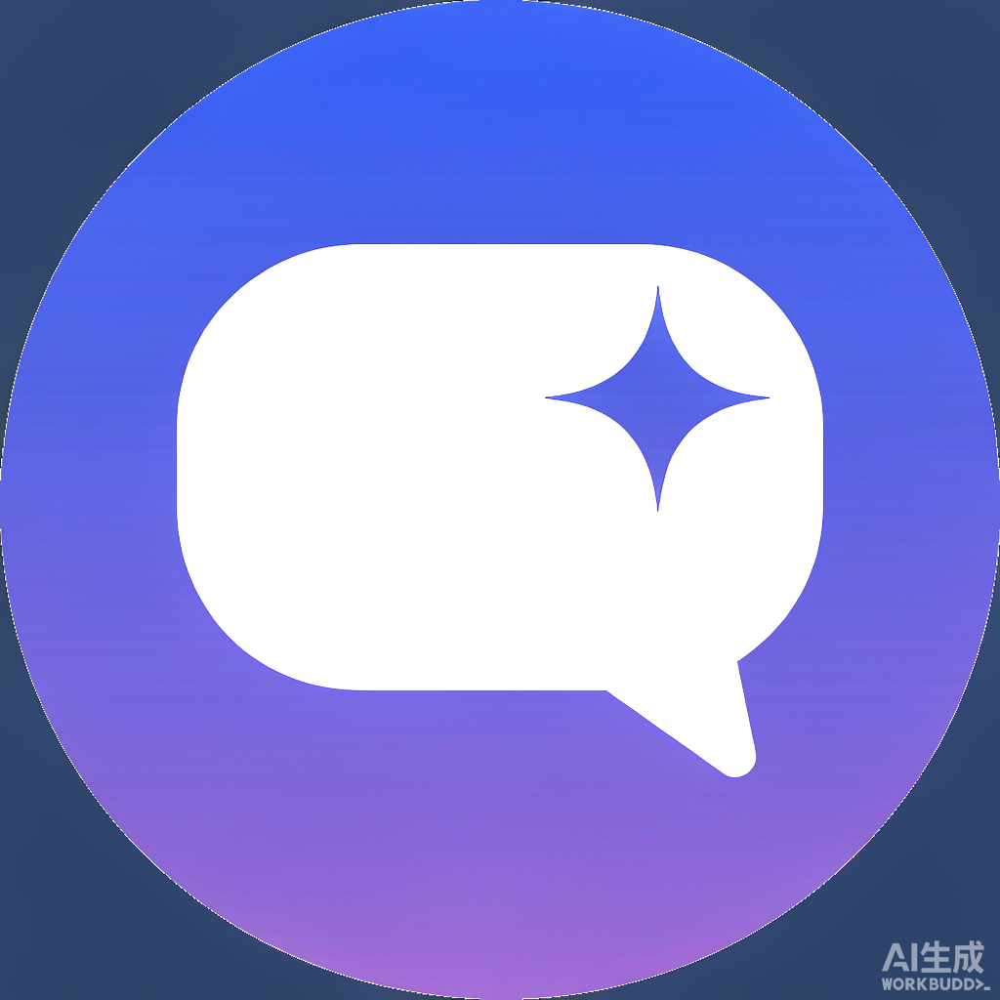

每张卡里左边是放大图，右边是真实尺寸 56px —— 它最终就那么小，放大好看不算数。 选中后回我编号（A–E）即可，也可以直接说「C 那张但换成蓝色」。
最接近现在的那个球，只是线更粗、更规整。改动最小、风险最低。

圆角方块脸 + 天线，眼睛大、有笑意。最"有表情"，缩到 56px 也认得出。

白球 + 深蓝线稿，只有右上角一点星芒。和现在的浅灰界面最贴，不像一个外来按钮。

有体积和光的球，面罩里两只眼睛发亮。最"重"、最抓眼，也最不像扁平的系统 UI。

表达的是"能对话"，不是"我是机器人"。最偏产品吉祥物的一版。